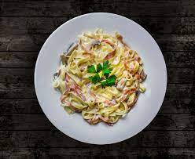

Pasta Carbonara - A Creamy Delight

Ingredients
- Spaghetti: 1 pound
- Eggs: 4 large
- grated Parmesan cheese: ½ cup (plus extra for serving)
- Pancetta or bacon: ½ pound, diced
- Freshly ground black pepper: to taste
- Olive oil: 1 tablespoon
Instructions
- Bring a large pot of salted water to a boil. Add the spaghetti and cook according to package instructions until al dente (firm to the bite).
- While the pasta cooks, whisk together the eggs and Parmesan cheese in a large bowl. Season generously with black pepper.
- In a separate pan, heat olive oil over medium heat. Add the pancetta or bacon and cook until crispy. Remove from the pan with a slotted spoon, leaving the rendered fat behind.
- Reserve about ½ cup of the starchy pasta water before draining the pasta. Drain the pasta well and immediately add it to the pan with the bacon fat.
- Turn off the heat and remove the pan from the burner. Quickly pour the egg and cheese mixture over the hot pasta, tossing constantly to coat the noodles. The residual heat from the pasta will cook the eggs, creating a creamy sauce.
- If the sauce seems too thick, gradually add reserved pasta water, a tablespoon at a time, until your desired consistency is reached.
- Return the pancetta or bacon to the pasta and toss to combine. Serve immediately with additional Parmesan cheese for sprinkling on top.
Enjoy this quick and delicious Italian classic!